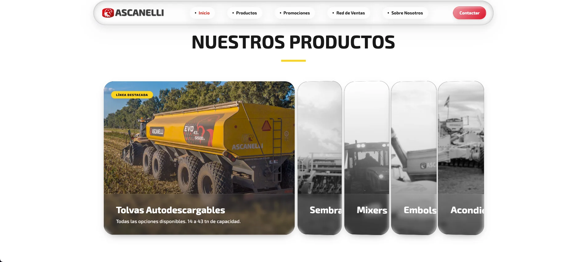
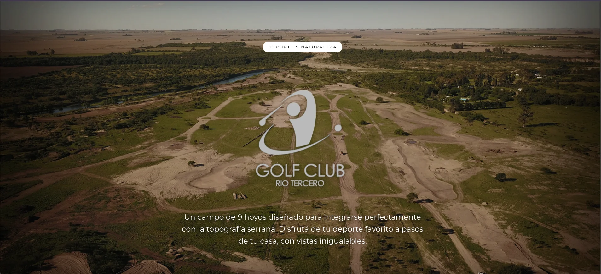
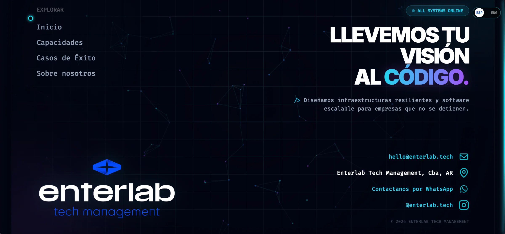
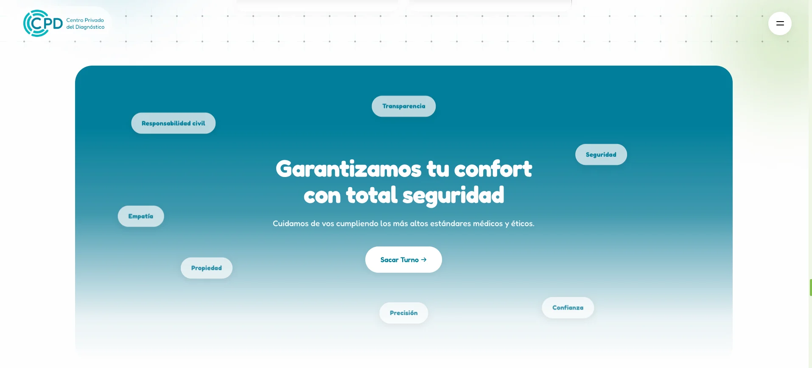

Ascanelli
Sitio web de Ascanelli. Ordena su línea de productos (tolvas autodescargables, sembradoras, mixers, embolsadoras y más), las promociones y la red de ventas en una navegación clara y visual.


Sitio web de Ascanelli. Ordena su línea de productos (tolvas autodescargables, sembradoras, mixers, embolsadoras y más), las promociones y la red de ventas en una navegación clara y visual.

Sitio web de Montecitos Country & Golf, el club de campo con cancha de golf de 9 hoyos en Río Tercero. Una portada inmersiva que transmite deporte y naturaleza desde el primer vistazo.

Sitio web de Enterlab Tech Management, consultora de software que diseña infraestructuras resilientes y software escalable. Estética tecnológica, animada y disponible en español e inglés.

Sitio web del Centro Privado del Diagnóstico. Una propuesta centrada en el confort y la seguridad de cada paciente, con acceso directo para sacar turno.